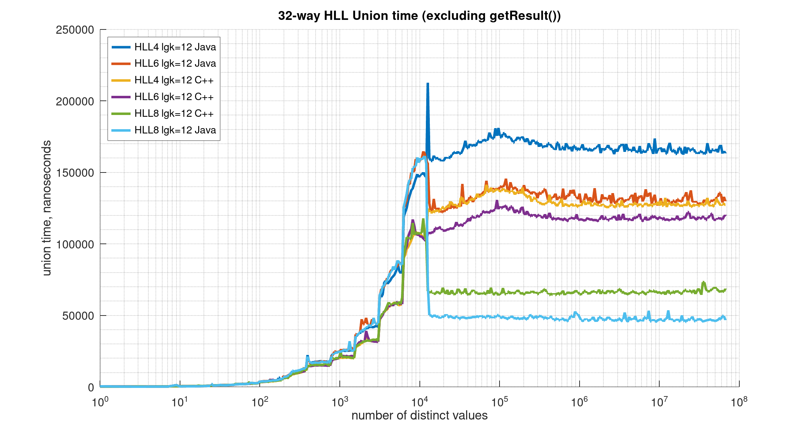

public class Union extends Object
update(HllSketch) can
be configured with any precision value lgConfigK (from 4 to 21), any TgtHllType
(HLL_4, HLL_6, HLL_8), and either on or off-heap; and it can be in either of the sparse modes
(LIST or SET), or the dense mode (HLL).
Although the API for this union operator parallels many of the methods of the HllSketch, the behavior of the union operator has some fundamental differences.
First, this union operator is configured with a lgMaxK instead of the normal lgConfigK. Generally, this union operator will inherit the lowest lgConfigK less than lgMaxK that it has seen. However, the lgConfigK of incoming sketches that are still in sparse are ignored. The lgMaxK provides the user the ability to specify the largest maximum size for the union operation.
Second, the user cannot specify the TgtHllType as an input parameter to the union.
Instead, it is specified for the sketch returned with getResult(TgtHllType).
The following graph illustrates the HLL Merge speed.

This graph illustrates the relative merging speed of the HLL 4,6,8 Java HLL sketches compared to the DataSketches C++ implementations of the same sketches. With this particular test (merging 32 relative large sketches together), the Java HLL 8 is the fastest and the Java HLL 4 the slowest, with a mixed cluster in the middle. Union / Merging speed is somewhat difficult to measure as the performance is very dependent on the mix of sketch sizes (and types) you are merging. So your mileage will vary!For a complete example of using the Union operator see Union Example.
| Constructor and Description |
|---|
Union()
Construct this Union operator with the default maximum log-base-2 of K.
|
Union(int lgMaxK)
Construct this Union operator with a given maximum log-base-2 of K.
|
Union(int lgMaxK,
org.apache.datasketches.memory.WritableMemory dstWmem)
Construct this Union operator with a given maximum log-base-2 of K and the given
WritableMemory as the destination for this Union.
|
| Modifier and Type | Method and Description |
|---|---|
int |
getCompactSerializationBytes()
Gets the size in bytes of the current sketch when serialized using
toCompactByteArray().
|
double |
getCompositeEstimate()
This is less accurate than the getEstimate() method and is automatically used
when the sketch has gone through union operations where the more accurate HIP estimator
cannot be used.
|
double |
getEstimate()
Return the cardinality estimate
|
int |
getLgConfigK()
Gets the effective lgConfigK for the union operator, which may be less than
lgMaxK.
|
double |
getLowerBound(int numStdDev)
Gets the approximate lower error bound given the specified number of Standard Deviations.
|
static int |
getMaxSerializationBytes(int lgK)
Returns the maximum size in bytes that this union operator can grow to given a lgK.
|
static double |
getRelErr(boolean upperBound,
boolean oooFlag,
int lgConfigK,
int numStdDev)
Gets the current (approximate) Relative Error (RE) asymptotic values given several
parameters.
|
HllSketch |
getResult()
Return the result of this union operator as an HLL_4 sketch.
|
HllSketch |
getResult(TgtHllType tgtHllType)
Return the result of this union operator with the specified
TgtHllType |
static int |
getSerializationVersion()
Returns the current serialization version.
|
static int |
getSerializationVersion(org.apache.datasketches.memory.Memory mem)
Returns the current serialization version of the given Memory.
|
TgtHllType |
getTgtHllType()
Gets the
TgtHllType |
int |
getUpdatableSerializationBytes()
Gets the size in bytes of the current sketch when serialized using
toUpdatableByteArray().
|
double |
getUpperBound(int numStdDev)
Gets the approximate upper error bound given the specified number of Standard Deviations.
|
static Union |
heapify(byte[] byteArray)
Construct a union operator populated with the given byte array image of an HllSketch.
|
static Union |
heapify(org.apache.datasketches.memory.Memory mem)
Construct a union operator populated with the given Memory image of an HllSketch.
|
boolean |
isCompact()
Returns true if the backing memory of this sketch is in compact form.
|
boolean |
isEmpty()
Returns true if empty
|
boolean |
isEstimationMode()
This HLL family of sketches and operators is always estimating, even for very small values.
|
boolean |
isMemory()
Returns true if this sketch was created using Memory.
|
boolean |
isOffHeap()
Returns true if the backing memory for this sketch is off-heap.
|
boolean |
isSameResource(org.apache.datasketches.memory.Memory mem)
Returns true if the given Memory refers to the same underlying resource as this sketch.
|
void |
reset()
Resets to empty and retains the current lgK, but does not change the configured value of
lgMaxK.
|
byte[] |
toCompactByteArray()
Gets the serialization of this union operator as a byte array in compact form, which is
designed to be heapified only.
|
String |
toString()
Human readable summary as a string.
|
String |
toString(boolean summary,
boolean detail,
boolean auxDetail)
Human readable summary with optional detail.
|
String |
toString(boolean summary,
boolean hllDetail,
boolean auxDetail,
boolean all)
Human readable summary with optional detail
|
byte[] |
toUpdatableByteArray()
Serializes this sketch as a byte array in an updatable form.
|
void |
update(byte[] data)
Present the given byte array as a potential unique item.
|
void |
update(ByteBuffer data)
Present the given byte buffer as a potential unique item.
|
void |
update(char[] data)
Present the given char array as a potential unique item.
|
void |
update(double datum)
Present the given double (or float) datum as a potential unique item.
|
void |
update(HllSketch sketch)
Update this union operator with the given sketch.
|
void |
update(int[] data)
Present the given integer array as a potential unique item.
|
void |
update(long datum)
Present the given long as a potential unique item.
|
void |
update(long[] data)
Present the given long array as a potential unique item.
|
void |
update(String datum)
Present the given String as a potential unique item.
|
static Union |
writableWrap(org.apache.datasketches.memory.WritableMemory srcWmem)
Wraps the given WritableMemory, which must be a image of a valid updatable HLL_8 sketch,
and may have data.
|
public Union()
public Union(int lgMaxK)
lgMaxK - the desired maximum log-base-2 of K. This value must be
between 4 and 21 inclusively.public Union(int lgMaxK,
org.apache.datasketches.memory.WritableMemory dstWmem)
The given dstMem is checked for the required capacity as determined by
HllSketch.getMaxUpdatableSerializationBytes(int, TgtHllType).
lgMaxK - the desired maximum log-base-2 of K. This value must be
between 4 and 21 inclusively.dstWmem - the destination writable memory for the sketch.public static final Union heapify(byte[] byteArray)
byteArray - the given byte arraypublic static final Union heapify(org.apache.datasketches.memory.Memory mem)
mem - the given Memorypublic static final Union writableWrap(org.apache.datasketches.memory.WritableMemory srcWmem)
The given dstMem is checked for the required capacity as determined by
HllSketch.getMaxUpdatableSerializationBytes(int, TgtHllType), and for the correct type.
srcWmem - an writable image of a valid sketch with data.public double getCompositeEstimate()
public int getCompactSerializationBytes()
public double getEstimate()
public int getLgConfigK()
public double getLowerBound(int numStdDev)
numStdDev - This must be an integer between 1 and 3, inclusive.
See Number of Standard Deviationspublic static int getMaxSerializationBytes(int lgK)
lgK - The maximum Log2 of K for this union operator. This value must be
between 4 and 21 inclusively.public HllSketch getResult()
public HllSketch getResult(TgtHllType tgtHllType)
TgtHllTypetgtHllType - the TgtHllType enumpublic TgtHllType getTgtHllType()
TgtHllTypepublic int getUpdatableSerializationBytes()
public double getUpperBound(int numStdDev)
numStdDev - This must be an integer between 1 and 3, inclusive.
Number of Standard Deviationspublic boolean isCompact()
public boolean isEmpty()
public boolean isMemory()
public boolean isOffHeap()
public boolean isSameResource(org.apache.datasketches.memory.Memory mem)
This is only relevant for HLL_4 sketches that have been configured for off-heap using WritableMemory or Memory. For on-heap sketches or unions this will return false.
It is rare, but possible, the the off-heap memory that has been allocated to an HLL_4 sketch may not be large enough. If this should happen, the sketch makes a request for more memory from the owner of the resource and then moves itself to this new location. This all happens transparently to the user. This method provides a means for the user to inquire of the sketch if it has, in fact, moved itself.
mem - the given Memorypublic void reset()
public byte[] toCompactByteArray()
public byte[] toUpdatableByteArray()
Union union; HllSketch sk;
int lgK = 12;
sk = new HllSketch(lgK, TgtHllType.HLL_8) //must be 8
for (int i = 0; i < (2 << lgK); i++) { sk.update(i); }
byte[] arr = sk.toUpdatableByteArray();
WritableMemory wmem = WritableMemory.wrap(arr);
//...
union = Union.writableWrap(wmem); //no deserialization!
public String toString(boolean summary, boolean hllDetail, boolean auxDetail, boolean all)
summary - if true, output the sketch summaryhllDetail - if true, output the internal data arrayauxDetail - if true, output the internal Aux array, if it exists.all - if true, outputs all entries including empty onespublic void update(HllSketch sketch)
sketch - the given sketch.public static final int getSerializationVersion()
public static final int getSerializationVersion(org.apache.datasketches.memory.Memory mem)
mem - the given Memory containing a serialized HllSketch image.public static double getRelErr(boolean upperBound,
boolean oooFlag,
int lgConfigK,
int numStdDev)
upperBound - return the RE for the Upper Bound, otherwise for the Lower Bound.oooFlag - set true if the sketch is the result of a non qualifying union operation.lgConfigK - the configured value for the sketch.numStdDev - the given number of Standard Deviations. This must be an integer between
1 and 3, inclusive.
Number of Standard Deviationspublic boolean isEstimationMode()
public String toString()
public String toString(boolean summary, boolean detail, boolean auxDetail)
summary - if true, output the sketch summarydetail - if true, output the internal data arrayauxDetail - if true, output the internal Aux array, if it exists.public void update(long datum)
datum - The given long datum.public void update(double datum)
datum - The given double datum.public void update(String datum)
Note: About 2X faster performance can be obtained by first converting the String to a char[] and updating the sketch with that. This bypasses the complexity of the Java UTF_8 encoding. This, of course, will not produce the same internal hash values as updating directly with a String. So be consistent! Unioning two sketches, one fed with strings and the other fed with char[] will be meaningless.
datum - The given String.public void update(ByteBuffer data)
This method will not modify the position, mark, limit, or byte order of the buffer.
Little-endian order is preferred, but not required. This method may perform better if the provided byte buffer is in little-endian order.
data - The given byte buffer.public void update(byte[] data)
data - The given byte array.public void update(char[] data)
Note: this will not produce the same output hash values as the update(String) method but will be a little faster as it avoids the complexity of the UTF8 encoding.
data - The given char array.public void update(int[] data)
data - The given int array.public void update(long[] data)
data - The given long array.Copyright © 2015–2024 The Apache Software Foundation. All rights reserved.